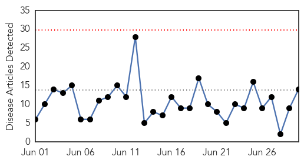
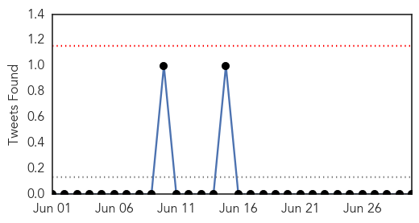
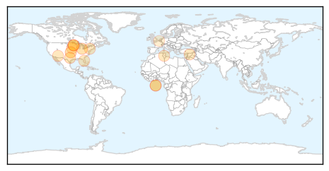
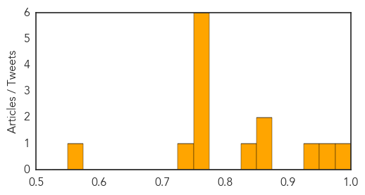
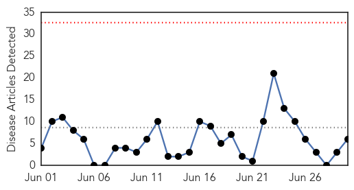
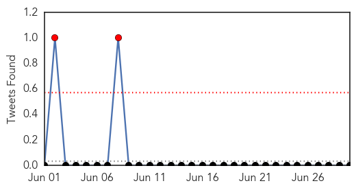

Influenza
30-Day Web Trend
0 alerts, 0 warnings

30-Day Twitter Trend
0 alerts, 0 warnings

Article Locations
Article Confidences
Top Articles:
- 0.997
- Risk for MERS-CoV importation to Canada low
- 0.971
- Health advisories from CDC calm avian flu worries
- 0.947
- France: Norovirus the cause of ‘Mud Day’ outbreak, 1000 sickened
- 0.859
- Developing disease-resistant poultry may be solution for multiple virus issues
- 0.853
- Bird flu raises fears over vaccine supply, human risk
- 0.832
- ARC issues vaccination mandate for new pediatric patients
- 0.751
- June 30, 2015 Archives
- 0.751
- June 29, 2015 Archives
- 0.751
- June 29, 2015 Archives
- 0.751
- June 29, 2015 Archives
- 0.751
- June 29, 2015 Archives
- 0.751
- June 29, 2015 Archives
- 0.740
- Avian Flu Outbreaks Likely Over, For Now
- 0.568
- Immunovaccine Inc ( V.IMV ) stock message board and forum
Top Tweets:
-
No tweets found for Jun 30, 2015
Cholera
30-Day Web Trend
0 alerts, 0 warnings

30-Day Twitter Trend
2 alerts, 0 warnings

Article Locations

Article Confidences

Top Articles:
- 0.996
- Ashanti Region records 7 cholera cases
- 0.994
- Ashanti Region records 7 cholera cases
- 0.988
- Cholera eradication in Haiti will take ‘some years,’ says outgoing UN coordinator
- 0.973
- W. Bahr el Ghazal health minister warns against Cholera outbreak
- 0.690
- Sanitation
- 0.663
- Attention People Who Eat Dog Meat! Here are 3 Major Health Concerns You Should Know About
Top Tweets:
-
No tweets found for Jun 30, 2015